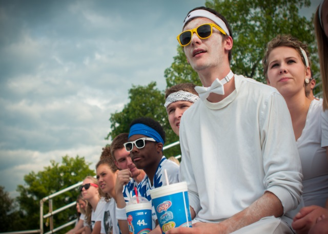

The Burris soccer team had a great turn out during a home game on September 9, 2014. The team did not disappoint the crowd in any way, shape, or form with excitement throughout the game plus extra.
Burris was up against their rivals, the Hamilton Height Huskies. The game seemed to look like Burris was going to have their hands full fending off the Huskies, but from the very beginning you could hear the goalie, Austin Applegate, shouting directions at his defensive players. Burris played well and offensively, even earning a few yellow cards in the process. But the fans did not seem to mind the card upsets one bit.
The crowd was pumped up and enthusiastic throughout the entirety of the game. Burris fans seemed like a sea of white with one individual even painting his face white to show his support. Some came to the game with homemade posters to support their favorite player; during half-time the crowd found a way to keep the enthusiasm going by pretending to be on a rollercoaster. A senior at the Indiana Academy, Hannah Dewitt, said “I appreciated the team spirit that Burris and the [Indiana] Academy have for their teams. It was nice to see.”
Burris students Ryan Morey, Tiffany Hollihan, and Nick Baker watch the game with anticipation.
The team held their own, especially during the first half keeping the ball on Hamilton Height’s side in attempts to score. The game was exhilarating, and a little comical, to watch. The grass was a bit slippery at times, causing great slide tackles. That did not stop Burris from scoring, though, with two goals made in the second half, Burris end up winning the game 3-1, Kevin Beatty scoring two goals and Gabe Coleman scoring one. The fans were ecstatic that Burris won, and at the end it was just one huge mass of fans and soccer players cheering and chanting.